PHP Twitcher Documentation
1. Introduction
2. Server Requirements
This professional live streaming platform requires a VPS or Dedicated server with Nginx with RTMP Support (libnginx-mod-rtmp & ffmpeg)
- Nginx web server
- MySQL 8+ Web Server
- PHP version 8.0.26 or higher
- PHP Extensions: BCMath, Ctype, Fileinfo, JSON, Mbstring, OpenSSL, PDO, Tokenizer, XML, cURL, exif, GD
- SSL (Https://) Certificate (Letsencrypt Certbot)
3. Uploading the Script Files
Connect to your server using your preferred way (SSH / a control panel file manager / FTP / etc.) and upload the zip file "php-twitcher.zip" to your domain. Unzip the file directly on the server on your domain path.
4. Setting the Document Root VERY IMPORTANT
You need to configure your web server document root to point to the /public directory.
You need to Add Header Access Control to your nginx vhost file
add_header Access-Control-Allow-Origin "*";
Nginx Vhost Example
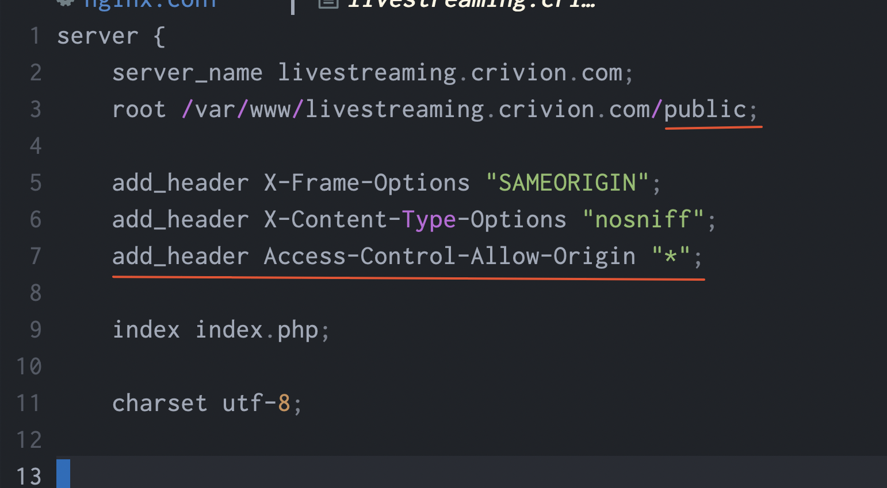5. Database & Setup
Create a Database & User
Create a MySQL database and ASSIGN a MySQL User to it. You can do that via CLI or your server Control panel (if you have any).
Setup - Run the Script Installer
Point to your-domain.tld/install to run the installation.
6. Admin Panel
It's very important to set your own admin panel credentials after the installation.
For this, simply go to your-site.tld/admin/login and then point to Admin Logins section.
7. General Configuration
Now it's time to do some general setup for your brand new site like: title, logo, etc.
For this, simply go to your-site.tld/admin/login and then point to App Configuration section.
8. Live Streaming - Nginx-RTMP Setup VERY IMPORTANT
The core functionality of PHP Twitcher is the Live Streaming feature.
Make sure you have libnginx-mod-rtmp & ffmpeg
apt update
apt install build-essential libpcre3 libpcre3-dev libssl-dev nginx-full libnginx-mod-rtmp ffmpeg
Configuring NGINX for RTMP Support
Edit nginx.conf (usually located at /etc/nginx/nginx.conf) to add rtmp{..} block just after http{...} block closes
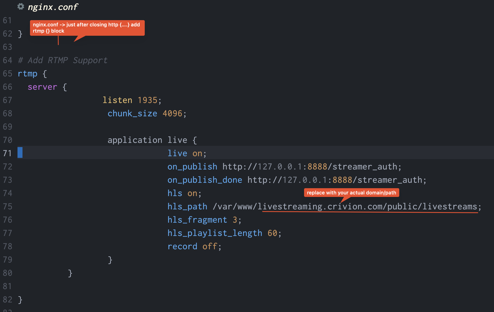Copy code below and replace yourdomain.com with your actual domain/path
rtmp {
server {
listen 1935;
chunk_size 4096;
application live {
live on;
on_publish http://127.0.0.1:8888/streamer_auth;
on_publish_done http://127.0.0.1:8888/streamer_auth;
hls on;
hls_path /var/www/yourdomain.com/public/livestreams;
hls_fragment 3;
hls_playlist_length 60;
record off;
}
}
}
Set RTMP URL in the Admin Panel
After configuring nginx for RTMP Support, your RTMP url should be in this format: rtmp://yourdomain.com/live
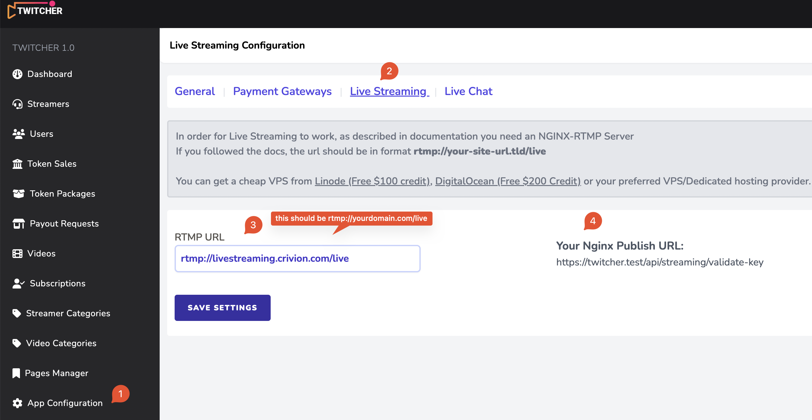Last Step - Configure RTMP Authentication (Stream Keys)
In order to allow your platform users to stream using OBS or similar software, you need to configure your vhost file authenticating users with stream keys
Open your vhost file for the domain (usually /etc/nginx/sites-available/yourdomain.conf) and add the following block at the bottom - replace yourdomain.com with your actual domain
# Configure RTMP Authentication
server {
listen 8888;
location /streamer_auth {
proxy_intercept_errors on;
proxy_set_header X-Real-IP $remote_addr;
proxy_set_header X-Forwarded-For $proxy_add_x_forwarded_for;
proxy_pass https://yourdomain.com/api/streaming/validate-key;
}
}
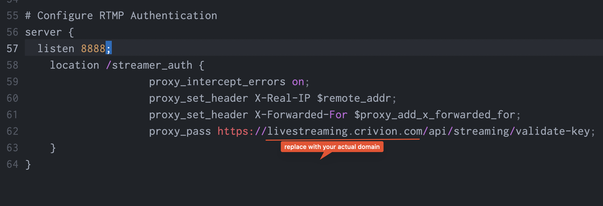
9. Live Chat - Pusher Setup VERY IMPORTANT
Setting up the live chat functionality.
Obtaining the Pusher Keys
Go to your account on https://dashboard.pusher.com/channels -> click on Create App
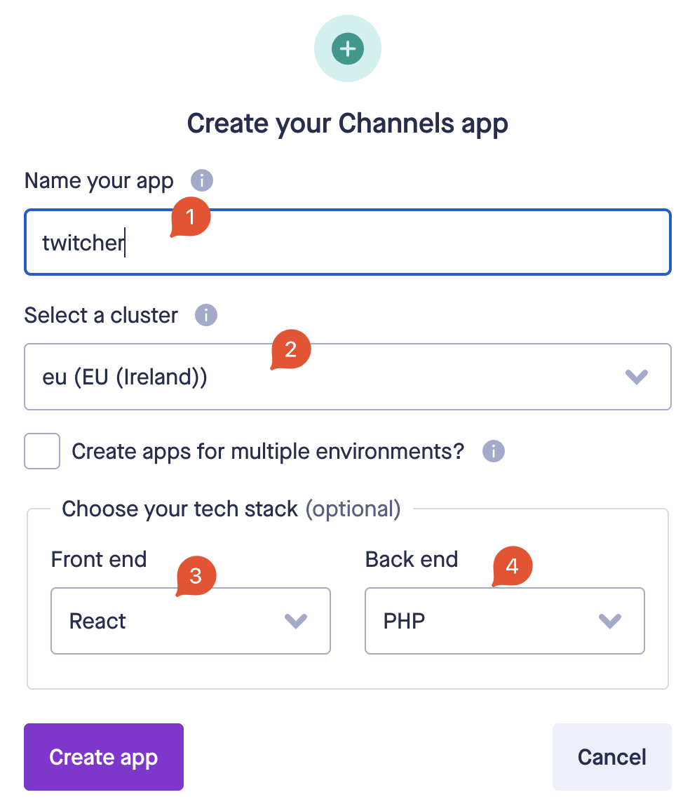Then from your newly created app dashboard, point to keys
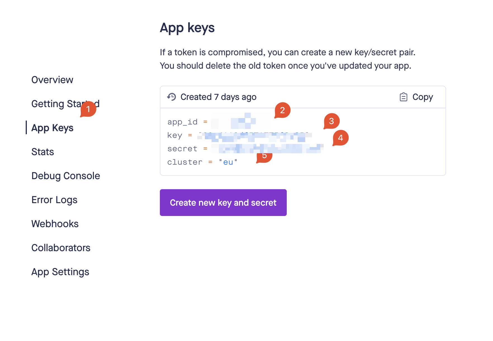Finally, point to admin panel and add the keys.
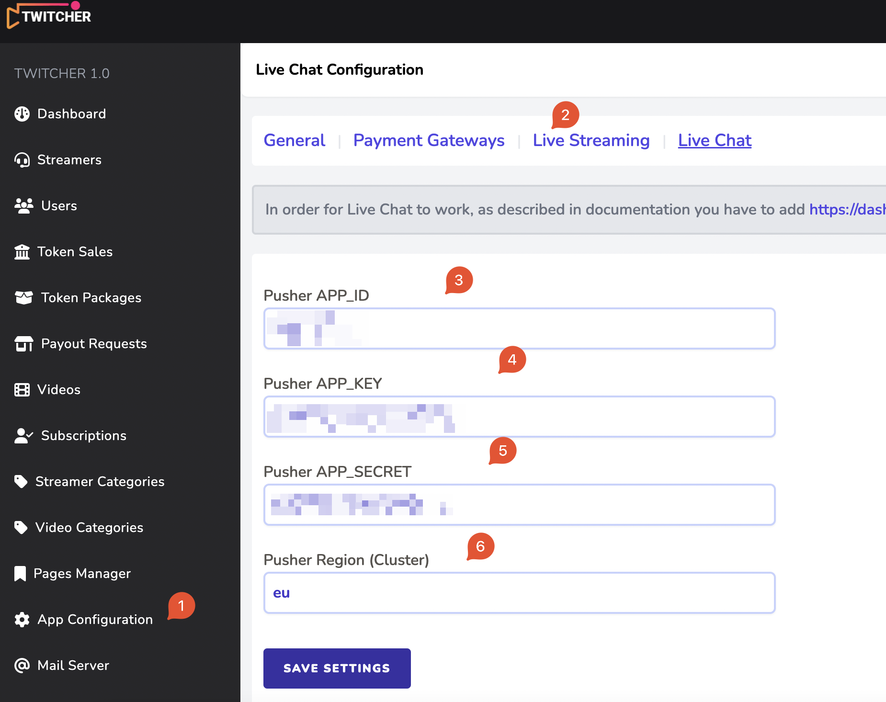10. Payment Gateways
PHP Twitcher enables you to take payments via 4 gateways: stripe, bank transfer, paypal and ccbill.
PayPal Payments
Simply add your paypal email and set PayPal payments to enabled.
Bank Transfer Payments
Simply add your bank account details & instructions for the user to pay you.
Stripe Payments
Go to your Stripe account -> Developers section get your API keys
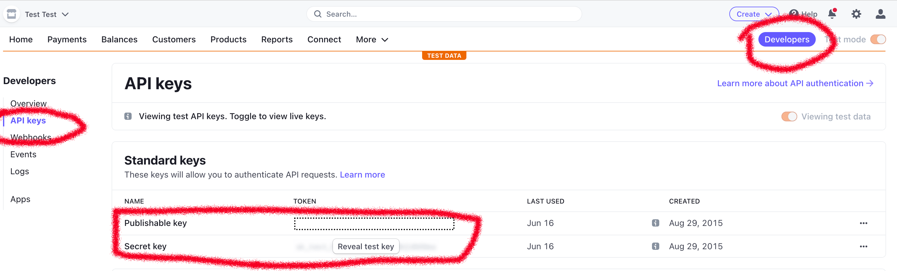Then add your details in Admin -> App Configuration -> Payment Gateways
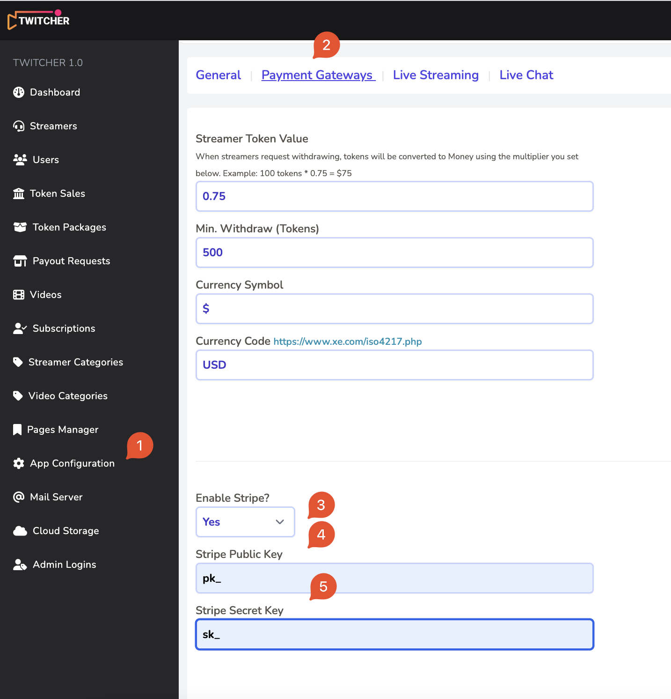CCBill Payments
You need DYNAMIC PRICING enabled in your CCBill Account - Get in touch with their live support https://support.ccbill.com
Login to your CCBill account. https://admin.ccbill.com/megamenus/ccbillHome.html
Then go to FlexForms Systems and add new flex form
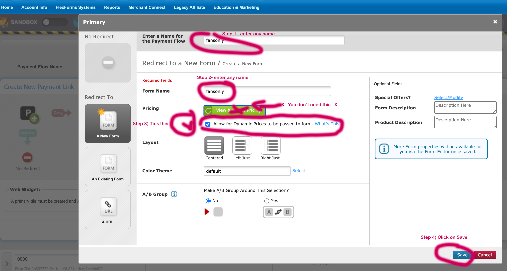
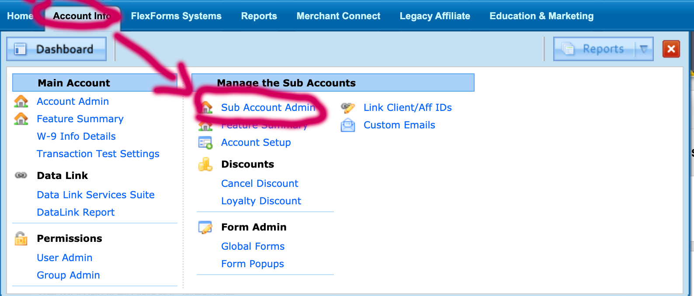
Your CCBill WebHooks URL is https://your-site.tld/api/ccbill/webhooks
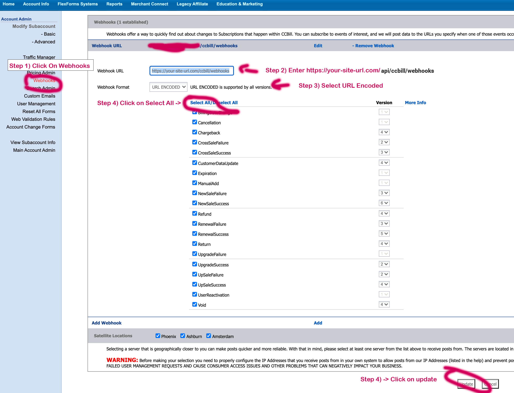 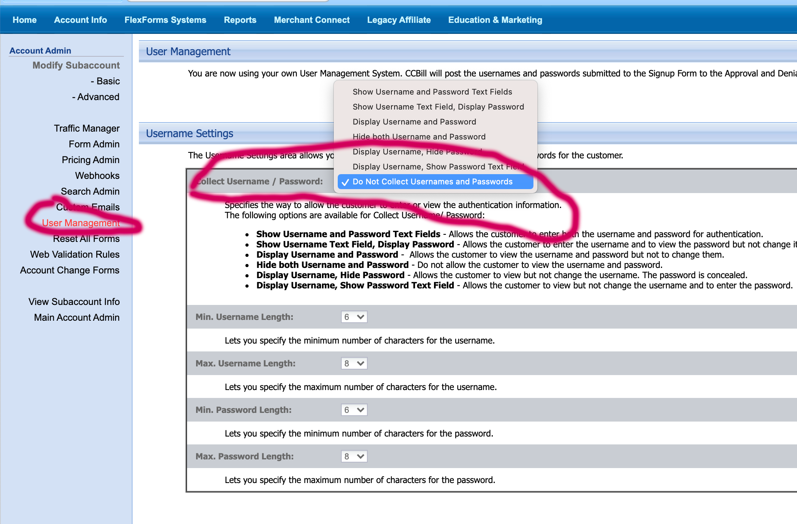11. Token Packs
Token Pacakages are the way this platform earns you money.
Your profit will come from the difference of the streamer token value and the amount you sell tokens for to regular users.
Example:
- User buys 100 tokens for $90
- User tips the 100 tokens to a streamer
- You set the token value for streamer to $0.75/token
- When streamer withdraws the 100 tokens, it'll get paid $75
- Your profit will be difference from token sale to streamer withdrawal amount: $90-$75=$15
12. Mail Server (SMTP)
It is crucial to setup your SMTP mail server & test the configuration prior to launching your site to the public.
There are a lot of email notifications like contact form, streamer identity verification, payout requests, etc. that rely on your mail server to notify the respective recipients like admin, users or streamers.
The log driver is used for debugging only and the emails will appear in storage/logs/laravel.log folder.
Translating the App
If you wish to translate the app into your own language it is in fact very easy and translation ready.
Simply open lang/en.json & lang/en/* files and your language strings to the right.
Video Guide
If you are more comfortable with a video guide, here's how we setup our live demo from scratch including VPS installation & configuration.